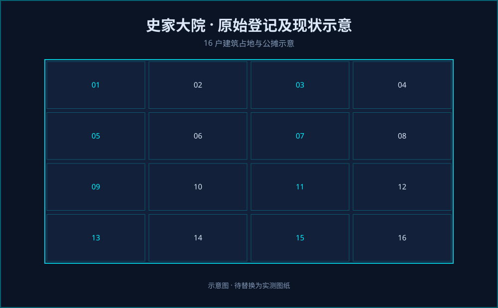

📐 史家大院原始登记及现状示意图

史家大院土地及建筑分布示意图
📐 第1步：土地面积计算
总占地面积 = 62.9×12.06 + 13.87×6.38 − 2.46×14.36
= 758.574 + 88.4906 − 35.3256 = 811.739 m²
总建筑占地面积 = Σ(各户长×宽) → 逐户求和
计算明细见下表 → 合计 = 508.9856 m²
院落空地面积 = 总占地面积 − 总建筑占地面积
= 811.739 − 508.9856 = 302.7534 m²
🏠 第2步：各户建筑占地详细算式
| 序号 | 姓名 | 算式（长×宽） | 建筑占地 (m²) |
|---|---|---|---|
| 1 | 已拆除(3) | 4.7 × 9.66 | 45.402 |
| 2 | 史发胜(1) | 5.4 × 3.7 | 19.98 |
| 3 | 史发胜(2) | 5.35 × 3.8 | 20.33 |
| 4 | 史财旺(1) | 7.35 × 3.7 | 27.195 |
| 5 | 史财旺(2) | 1.97 × 3.7 | 7.289 |
| 6 | 史元锁(1)+史兴胜 | 8.65 × 3.75 | 32.4375 |
| 7 | 史元锁(2)+史兴胜 | 7.6 × 3.8 | 28.88 |
| 8 | 史发胜(3) | 8.7 × 3.8 | 33.06 |
| 9 | 史德胜(1) | 5.5 × 12 | 66.0 |
| 10 | 史发胜(4) | 2.53 × 3.38 | 8.5514 |
| 11 | 史发胜(6) | 4.95 × 3.55 | 17.5725 |
| 12 | 已拆除(2) | 10.56×4.87 + 5.5×3.2 | 69.0272 |
| 13 | 已拆除(1) | 3.2 × 8.18 | 26.176 |
| 14 | 史发胜(5) | 3.15 × 9.7 | 30.555 |
| 15 | 史德胜(2) | 9.7 × 3.25 | 31.525 |
| 16 | 已拆除(4) | 4.45×4.7 + 3.3×7.3 | 45.005 | 总建筑占地合计 | 508.9856 m² |
⚖️ 第3步：分摊系数 → 公摊面积 → 合计面积
分摊系数 kᵢ = 该户建筑占地 ÷ 总建筑占地 (508.9856)
公摊面积ᵢ = 院落空地面积 (302.7534) × kᵢ
合计面积ᵢ = 建筑占地ᵢ + 公摊面积ᵢ = 建筑占地 × (811.739/508.9856) = 建筑占地 × 1.59487
| 姓名 | 建筑占地 (m²) | 分摊系数 (算式) | 分摊系数值 | 公摊面积 (m²) | 合计面积 (m²) |
|---|---|---|---|---|---|
| 已拆除(3) | 45.402 | 45.402/508.9856 | 0.08922 | 27.02 | 72.42 |
| 史发胜(1) | 19.98 | 19.98/508.9856 | 0.03926 | 11.89 | 31.87 |
| 史发胜(2) | 20.33 | 20.33/508.9856 | 0.03995 | 12.09 | 32.42 |
| 史财旺(1) | 27.20 | 27.195/508.9856 | 0.05345 | 16.18 | 43.38 |
| 史财旺(2) | 7.29 | 7.289/508.9856 | 0.01433 | 4.34 | 11.63 |
| 史元锁(1)+史兴胜 | 32.44 | 32.4375/508.9856 | 0.06374 | 19.30 | 51.74 |
| 史元锁(2)+史兴胜 | 28.88 | 28.88/508.9856 | 0.05674 | 17.18 | 46.06 |
| 史发胜(3) | 33.06 | 33.06/508.9856 | 0.06496 | 19.67 | 52.73 |
| 史德胜(1) | 66.00 | 66.0/508.9856 | 0.12968 | 39.26 | 105.26 |
| 史发胜(4) | 8.55 | 8.5514/508.9856 | 0.01680 | 5.09 | 13.64 |
| 史发胜(6) | 17.57 | 17.5725/508.9856 | 0.03452 | 10.45 | 28.02 |
| 已拆除(2) | 69.03 | 69.0272/508.9856 | 0.13564 | 41.06 | 110.09 |
| 已拆除(1) | 26.18 | 26.176/508.9856 | 0.05144 | 15.57 | 41.75 |
| 史发胜(5) | 30.56 | 30.555/508.9856 | 0.06004 | 18.18 | 48.74 |
| 史德胜(2) | 31.53 | 31.525/508.9856 | 0.06195 | 18.75 | 50.28 |
| 已拆除(4) | 45.01 | 45.005/508.9856 | 0.08843 | 26.77 | 71.78 | 验算合计面积总和 | 811.74 m² |
🧑🌾 第4步：史发胜、史兴胜、史德胜 明细汇总
史发胜建筑面积合计 = 19.98 + 20.33 + 33.06 + 8.55 + 30.56 + 17.57 = 130.05 m²
史发胜公摊合计 = 11.89 + 12.09 + 19.67 + 5.09 + 18.18 + 10.45 = 77.37 m²
史发胜合计面积 = 130.05 + 77.37 = 207.42 m²
史兴胜建筑面积合计 = 32.44 + 28.88 = 61.32 m²
史兴胜公摊合计 = 19.30 + 17.18 = 36.48 m²
史兴胜合计面积 = 61.32 + 36.48 = 97.80 m²
史德胜建筑面积合计 = 66.00 + 31.53 = 97.53 m²
史德胜公摊合计 = 39.26 + 18.75 = 58.01 m²
史德胜合计面积 = 97.53 + 58.01 = 155.54 m²
| 户主 | 总建筑面积 (m²) | 总公摊面积 (m²) | 合计面积 (m²) |
|---|---|---|---|
| 史发胜 | 130.05 | 77.37 | 207.42 |
| 史兴胜 | 61.32 | 36.48 | 97.80 |
| 史德胜 | 97.53 | 58.01 | 155.54 |
| 三户合计 | 288.90 | 171.86 | 460.76 |
史发胜 1.5倍面积
311.13 m²
207.42 × 1.5
史兴胜 1.5倍面积
146.70 m²
97.80 × 1.5
史德胜 1.5倍面积
233.31 m²
155.54 × 1.5
📌 完整计算依据（最新表格）
▪ 总占地面积：62.9×12.06 + 13.87×6.38 − 2.46×14.36 = 811.739 m²
▪ 已拆除(1) 修正：3.2×8.18 = 26.176 m²；已拆除(4) 修正：4.45×4.7 + 3.3×7.3 = 45.005 m²
▪ 总建筑占地 = 508.9856 m²；院落空地 = 302.7534 m²
▪ 分摊系数 = 建筑占地 / 508.9856；公摊面积 = 302.7534 × 分摊系数；合计面积 = 建筑占地 × 1.59487
▪ 1.5倍补偿面积 = 合计面积 × 1.5，作为认定建筑补偿面积的参考值。
▪ 根据原始调阅出来的土地参考依据，进行核实，核实后只作为还原历史材料，佐证是否进行补偿。具体补偿需要由策划公司测量再次根据实际家庭情进行分摊。
▪ 总占地面积：62.9×12.06 + 13.87×6.38 − 2.46×14.36 = 811.739 m²
▪ 已拆除(1) 修正：3.2×8.18 = 26.176 m²；已拆除(4) 修正：4.45×4.7 + 3.3×7.3 = 45.005 m²
▪ 总建筑占地 = 508.9856 m²；院落空地 = 302.7534 m²
▪ 分摊系数 = 建筑占地 / 508.9856；公摊面积 = 302.7534 × 分摊系数；合计面积 = 建筑占地 × 1.59487
▪ 1.5倍补偿面积 = 合计面积 × 1.5，作为认定建筑补偿面积的参考值。
▪ 根据原始调阅出来的土地参考依据，进行核实，核实后只作为还原历史材料，佐证是否进行补偿。具体补偿需要由策划公司测量再次根据实际家庭情进行分摊。